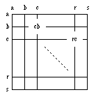

![[SGF FF[4] - Smart Game Format]](images/head.gif)
 Coordinate system for points and moves
The first letter designates the column (left to right), the second the row
(top to bottom). The upper left part of the board is used for smaller
boards, e.g. letters "a"-"m" for 13*13.
A pass move is shown as '[]' or alternatively as '[tt]' (only for
boards <= 19x19), i.e. applications should be able to deal with both
representations. '[tt]' is kept for compatibility with FF[3].
Using lowercase letters only the maximum board size is 26x26.
In FF[4] it is possible to specify board sizes upto 52x52. In this case uppercase letters are used to represent points from 27-52, i.e. 'a'=1 ... 'z'=26 , 'A'=27 ... 'Z'=52
See also: extensive explanation with examples (should leave no question unanswered; is part of FF5 discussion but valid for FF4 as well).
Property: HA Propvalue: number Propertytype: game-info Function: Defines the number of handicap stones (>=2). If there is a handicap, the position should be set up with AB within the same node. HA itself doesn't add any stones to the board, nor does it imply any particular way of placing the handicap stones. Related: KM, RE, RU Property: KM Propvalue: real Propertytype: game-info Function: Defines the komi. Related: HA, RE, RU Property: TB Propvalue: elist of point Propertytype: - Function: Specifies the black territory or area (depends on rule set used). Points must be unique. Related: TW Property: TW Propvalue: elist of point Propertytype: - Function: Specifies the white territory or area (depends on rule set used). Points must be unique. Related: TB